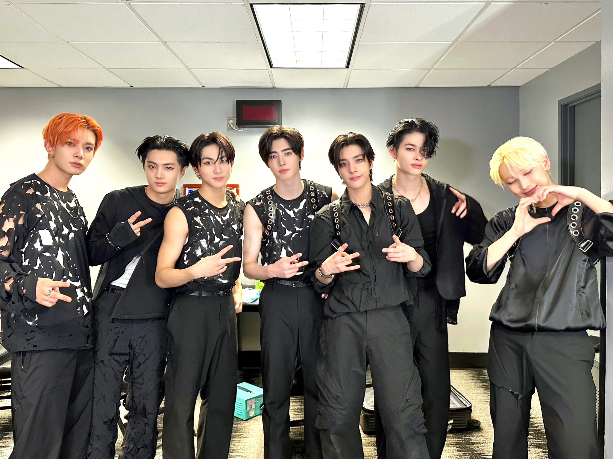
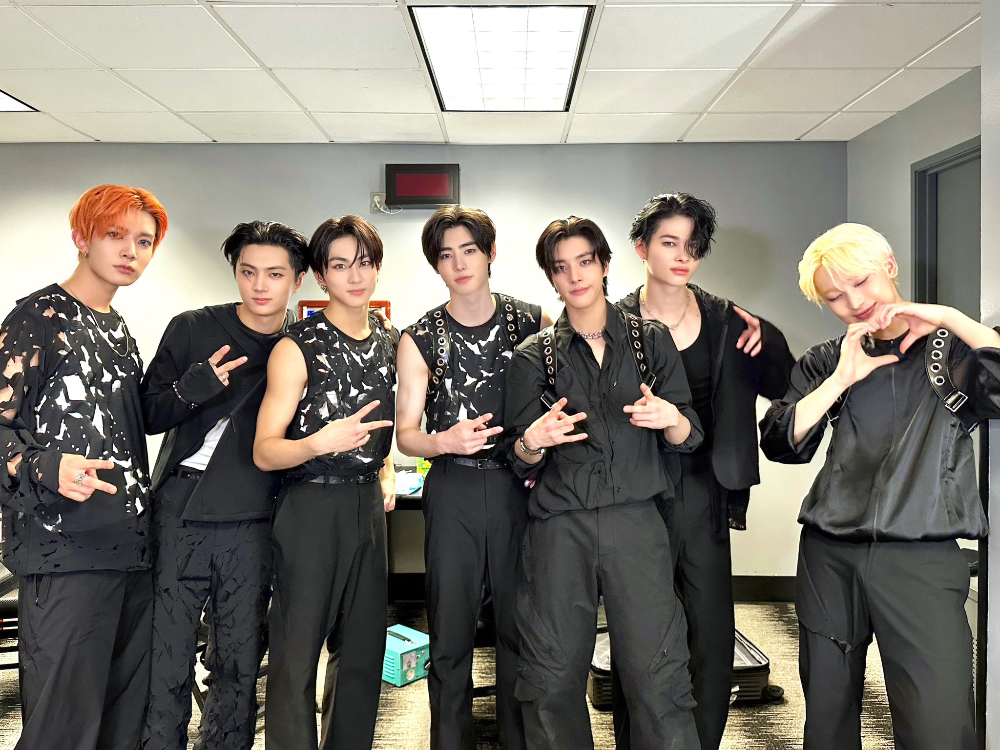

One, two, Connect! Hello they are Enhypen!
ENHYPEN (엔하이픈) is a seven-member South Korean boys group that debuted in November 2020 under Belift Lab. The group consists of members Jungwon, Heeseung, Jay, Jake, Sunghoon, Sunoo, and Ni-ki.
The name ENHYPEN means connection, discovery and growth. Similar to how a hyphen connects words to discover a new meaning. ENHYPEN refers to how the members discovered each other, are connected to one another, and will continue to grow together.⋆୨♡୧⋆